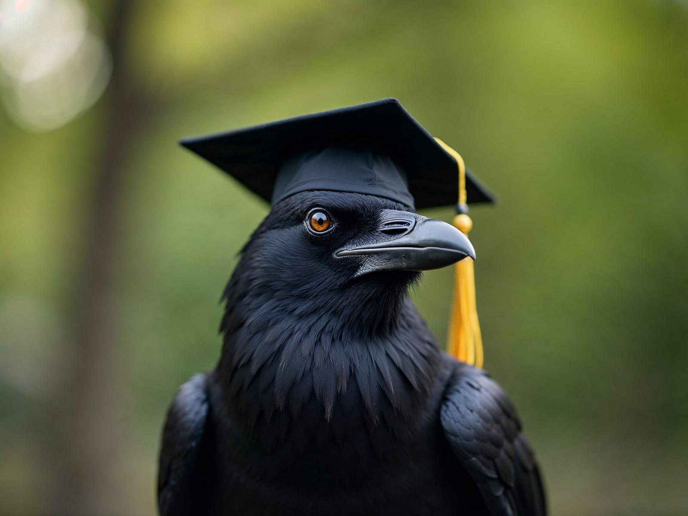
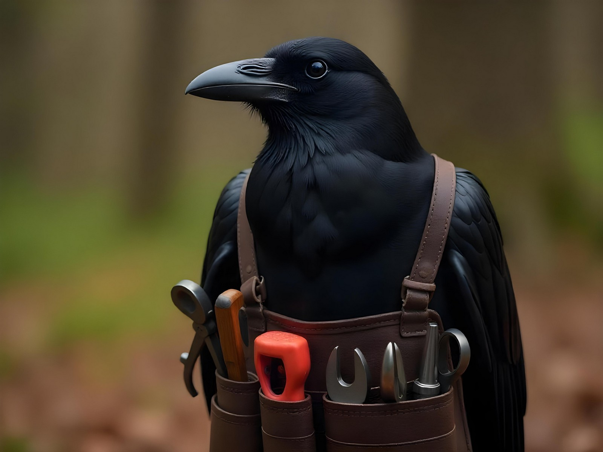
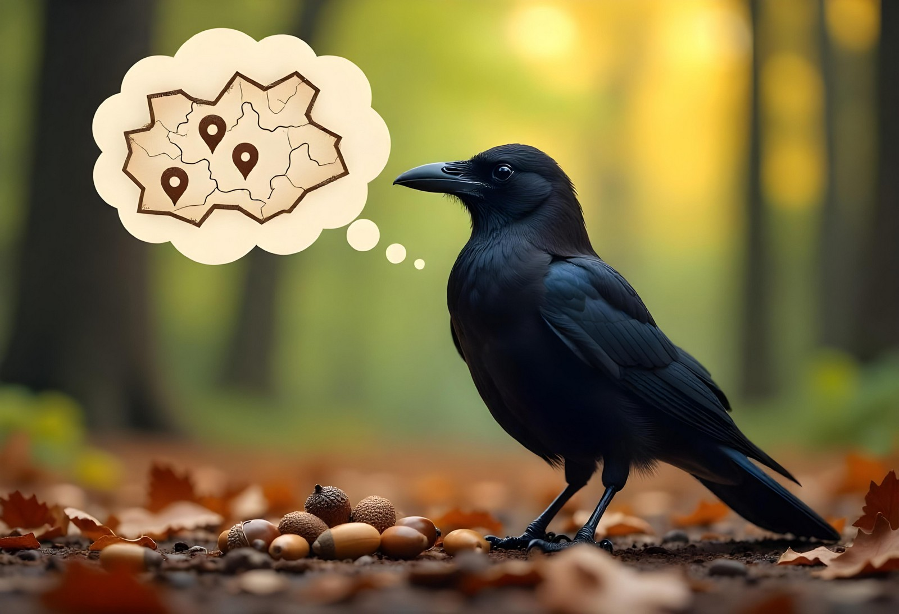
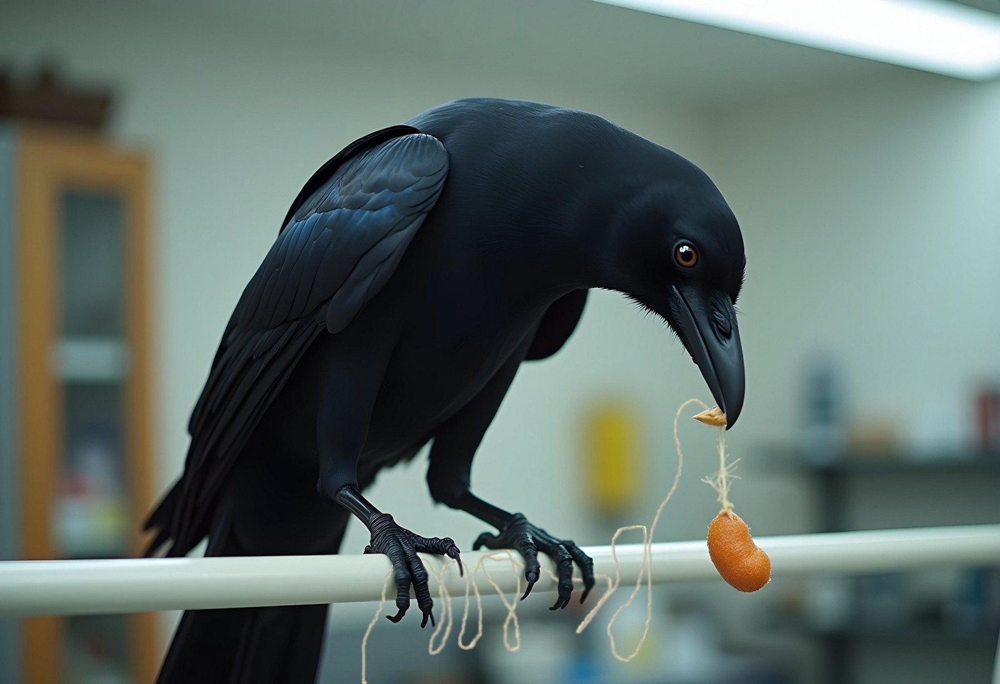
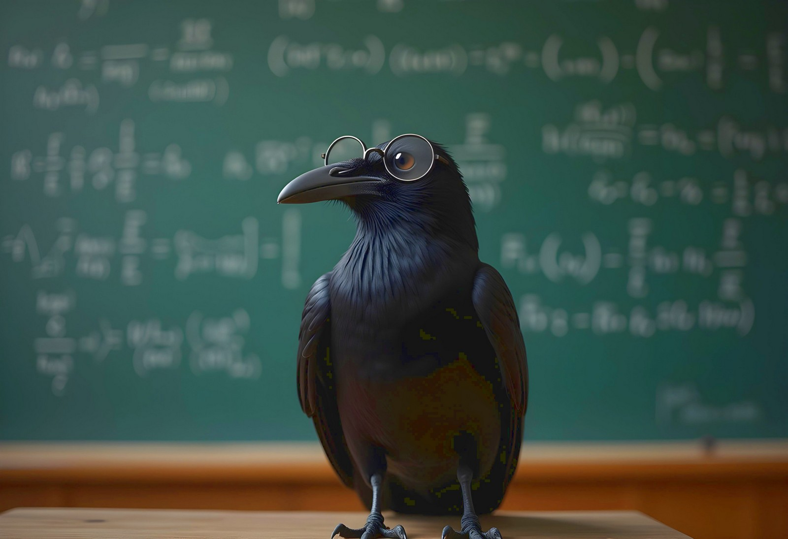

Remarkable Intelligence of the Corvid Birds

Remarkably Smart Birds
Crows, ravens, rooks, and jays – members of the corvid bird family – are actually some of the smartest animals on our planet. These birds can solve complex problems that even some primates struggle with. They are considered to be as intelligent as dolphins and chimpanzees. Today, I'd like to share with you why these feathered geniuses deserve our attention and respect.
Master Tool Makers

First, corvids have impressive tool-making abilities. Crows craft special hooks from twigs to pull insects out of tree holes. They don't just use what they find – they actually shape these tools for specific tasks. Scientists have observed these birds carefully selecting branches, removing unwanted parts, and even bending them into hooks. This kind of tool creation was once thought to be unique to humans and a few apes, but these birds prove otherwise.
Elephant-Like Memories

Next, these birds have amazing memories. Ravens can remember people who have treated them badly, dive bombing them every time they pass by. Crows form lasting bonds with kind humans who feed them, often bringing small gifts like shiny objects as tokens of gratitude. Corvids can also remember where they have hidden literally thousands of seeds and nuts, returning to these secret spots months later when food is scarce.
Clever Problem Solvers

Corvids are exceptional problem solvers, using their intelligence to overcome challenges in creative ways. Ravens have shown their understanding of cause and effect by pulling up food that was dangling on a string, using their feet and beak. They also use deception to protect their food caches; if other birds are watching, they pretend to hide food in one spot but secretly place it elsewhere. These behaviors demonstrate their ability to think ahead and adapt to situations.
Small Brains, Big Ideas

The intelligence of corvids reminds us that brainpower comes in many forms and sizes. These birds, with their tiny brains, challenge our understanding of animal intelligence. Next time you see a crow or raven, take a moment to appreciate the complex mind behind those watchful little eyes. These birds aren't just flying around mindlessly – they're observing, assessing, and learning. But be on your best behavior; they're watching you, and remembering who you are.